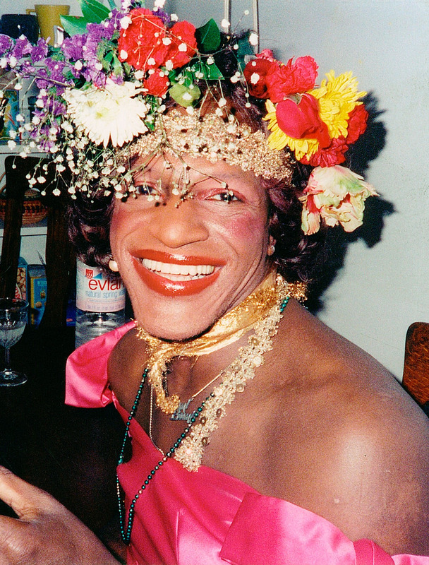
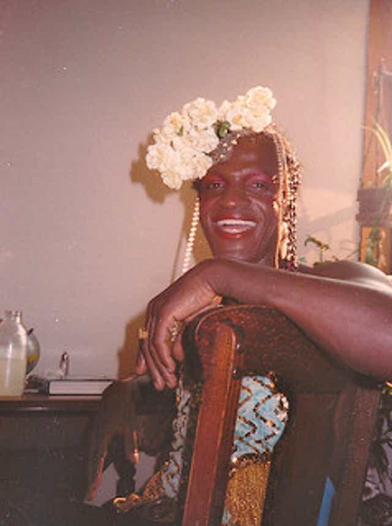

Gay liberation activist
MARSHA P.

Self-identified drag queen
JOHNSON

“No pride for some of us without liberation for all of us.”
Marsha P. Johnson (August 24, 1945 – July 6, 1992), born and also known as Malcolm Michaels Jr., was an American gay liberation activist and self-identified drag queen. Known as an outspoken advocate for gay rights, Johnson was one of the prominent figures in the Stonewall uprising of 1969.
→ Click here for more information about Marsha